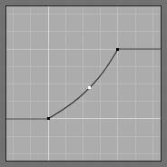
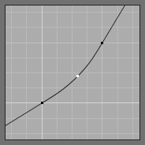

Віджет кривої¶

Curve widget.
Призначення віджету кривої -- Curve Widget -- це дозволити користувачу модифікувати увід (наприклад, зображення) інтуїтивним способом для плавного регулювання значень уверх та вниз за допомогою кривої.
The input values are mapped to the X axis of the graph, and the output values are mapped to the Y axis.
Керувальні точки¶
Як і всі криві у Blender'і, крива на віджеті кривої -- Curve Widget скеровується за допомогою керувальних точок -- control points.
Стандартно, початково на кривій є дві керувальні точки: одна у позиції (0.0, 0.0) і друга у позиції (1.0, 1.0), що означає пряме розкладання уводу на вивід (без змін).
- Переміщення
- Просто ЛКМ клацайте на потрібній точці та тягніть її куди потрібно.
- Додання
- Клацніть ЛКМ будь-де на кривій, де відсутні керувальні точки, і додасться нова керувальна точка.
- Вилучення
- Виділіть потрібну керувальну точку на клацніть ЛКМ на кнопці
Xу верхньому правому куті віджета для вилучення.
Контролери¶
Над графом кривої є ряд контролерів. Це:
- Присування
- Присуває -- zoom in криву ближче у центрі графа для показу більше деталей та забезпечення більш точного керування. Для навігації навколо кривої при присуванні клацайте ЛКМ та тягніть за порожню частину графа.
- Відсування
- Відсуває -- zoom out граф, щоб показати менше деталей та оглядати його як ціле. Ви не можете відсувати дальше, ніж визначені границі відсікання (дивіться нижче про відсікання Clipping).
- Знаряддя
- Скинути Огляд -- Reset View
- Скидає огляд кривої до початкового.
- Векторний Держак -- Vector Handle
- Векторний тип держака точки кривої. Розриває тангенс, дотичну у місці держака кривої, роблячи її кутовою.
- Авто Держак -- Auto Handle
- Автоматичний тип держака точки кривої.
- Продовжити Горизонтально -- Extend Horizontal
Спричиняє залишення кривої горизонтальною перед першою точкою та після останньої точки.
Продовжити Горизонтально -- Extend Horizontal.
- Продовжити Екстрапольовано -- Extend Extrapolated
Спричиняє екстраполяцію кривої перед першою точкою та після останньої точки, базуючи на формі кривої.
Продовжити Екстрапольовано -- Extend Extrapolated.
- Скинути Криву -- Reset Curve
- Скидає криву до стандартного стану (вилучає усі точки, додані на кривій).
- Відсікання
- Вжити Відсік -- Use Clipping
- Змушує точки кривої залишатися між визначеними значеннями.
- Мін -- Min X/Y та Макс -- Max X/Y
- Задає мінімальні та максимальні межі для точок кривої.
- Видалення -- Delete
- Вилучає виділену керувальну точку. Перша й остання точки на кривій не можуть бути видалені.
- X, Y
- Координати виділеної керувальної точки.
- Копіювання -- Copy / Вставляння -- Paste Ctrl-C, Ctrl-V
- Ціла крива може бути скопійована з одного віджета кривої на інший, шляхом наведення курсора миші над джерельним графом, натисненням Ctrl-C, наведенням курсора миші над цільовим графом і натиснення Ctrl-V.